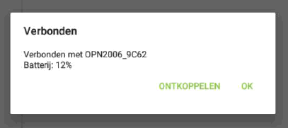
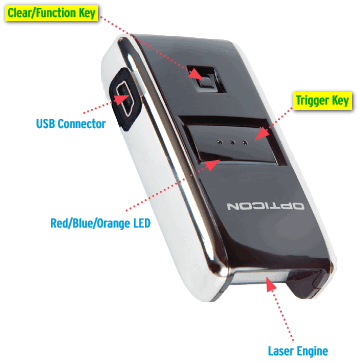

Opnieuw verbinden met de app, na weglopen met de scanner, geeft soms problemen.
Dit komt waarschijnlijk voor, als een gebruiker meer dan 5 minuten buiten de verbinding van de app blijft. De scanner is standaard zo ingesteld dat hij 5 minuten in de connectie-modus blijft, zodat de app weer automatisch kan verbinden zodra de scanner in bereik is.
Opmerking: Na 5 minuten schakelt de scanner zichzelf uit. Er kan dan nog wel gescand worden, maar de app kan de verbinding niet meer automatisch herstellen zodra de scanner in bereik is.
Als de app nog aan het proberen is om de verbinding te herstellen (icoontje : ), kan de verbinding worden hersteld door de scanner weer in de verbindingsmodus te zetten.
Opnieuw verbinden kan op twee manieren:
Zet de scanner in de verbindingsmodus, door het kleine knopje ingedrukt te houden tot de scanner blauw knippert, of door de barcode Make discoverable and connectable (+-DSCO-+) te scannen:
Scan de code Transmit memorized data (als de scanner in batch modus staat):
Hierdoor gaat de scanner weer blauw knipperen
Na max. tien seconden wachten verbindt de app weer met de scanner.
Als de app is gestopt met zoeken naar de scanner (icoontje: ), moet de verbinding worden hersteld door de scanner in de verbindingsmodus te zetten (op één van bovenstaande manieren), en daarna op het icoontje in de app te klikken.
Als de accu van de scanner zover leeg is dat de scanner niet meer werkt, knippert de LED van de scanner oranje. Na een minuut schakelt de scanner zichzelf uit.
Het is mogelijk om de scanner via de Werkbon-App te ontkoppelen:

Als dit uitgevoerd is, dient de scanner weer opnieuw gekoppeld te worden volgens deze handleiding: Handleiding 1, Opticon OPN2006 scanner koppelen met Android.
Om de scanner te resetten, doorloopt u de volgende stappen::
Houd beide knoppen Scan - en verbind (zie afbeelding Clear+Trigger key) knop 30 – 40 seconden ingedrukt, 
totdat de scanner een duidelijke pieptoon geeft en de led indicator rood gaat branden.
Als de app niet reageert op het scannen van barcodes, is de scanner waarschijnlijk niet meer goed verbonden met de app. (Dit kan bijvoorbeeld nadat de scanner uitgevallen of leeg is).
In dit geval helpt het vaak om de scanner een keer te herstarten, bluetooth op het apparaat opnieuw te starten.
Schakel de scanner uit door het kleine knopje ingedrukt te houden tot er een tweetonig piepsignaal wordt afgegeven, en de LED van de scanner uit staat.
Gerelateerde onderwerpen
Copyright ©
{kind=link}